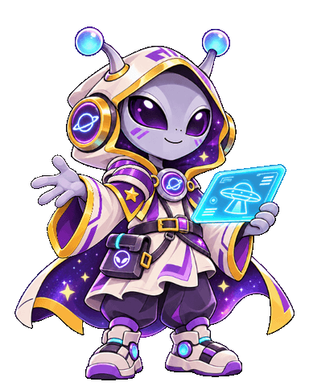
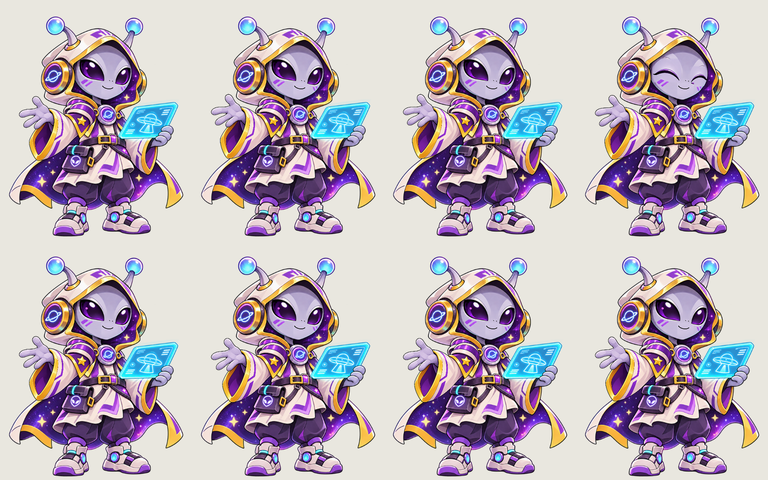

Cảnh hồ thông và thuyền · Hướng dẫn và phạm vi kiểm chứng
Bản ghi cảnh đang chạy ở tốc độ thường. Mở Café → Đến đồi chè → Đến hồ thông để tương tác.
Bản phóng to từ cùng video, giữ nguyên tốc độ phát.
Rê chuột hoặc focus hình bên trái để xem pose chào.

